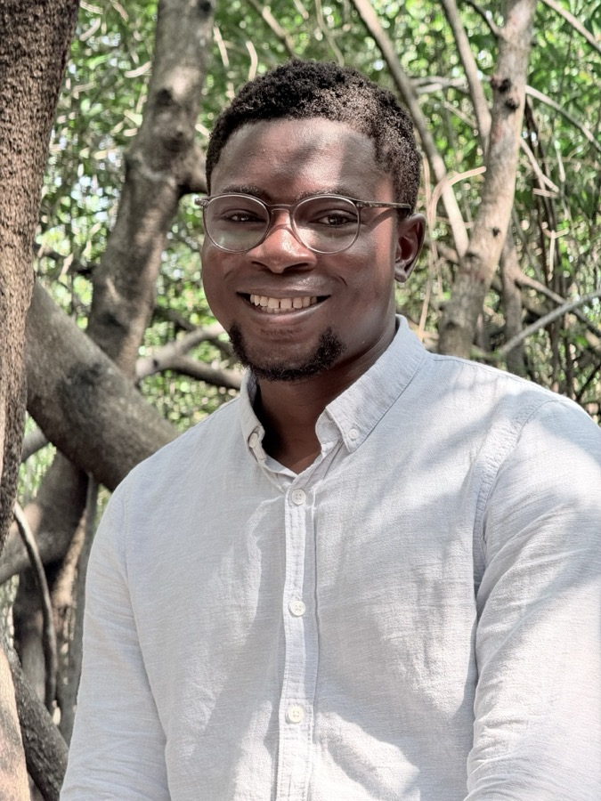

Sustainability and Social Risk Specialist with 8+ years of experience in environmental and social (E&S) risk management, safeguards, and investment due diligence across development finance and international organizations. PhD (summa cum laude) from TU Dresden. Currently a Contextual Risks Specialist at the International Finance Corporation (IFC) and a researcher at United Nations University Resource Nexus, working at the intersection of climate-fragility risk, agrifood systems, and E&S safeguards across Sub-Saharan Africa.

Peer-reviewed publications and policy research on sustainability assessment, forest governance, agrifood sustainability, and climate-fragility risk.
Selected roles across development finance, multilateral research, and international institutions.
Redesigned IFC's global Contextual Risk Index — a quantitative E&S and climate-fragility screening tool spanning 200+ countries — and delivered risk analysis for World Bank Group strategic reports across Nigeria, DRC, Chad, Cameroon, Mozambique, and Ethiopia.
Led multi-country research on the social dimension of agrifood systems, applying machine learning and NLP to sustainability-indicator design in data-scarce contexts across the Sahel.
Contributed to a sub-regional impact evaluation of IFAD programmes across six fragile G5 Sahel countries and northern Nigeria.
Led data and analytical initiatives across 50+ countries supporting policy design on social inclusion and governance.
Led a 14-person team producing the 2019 State of African Youth Report across all 55 African Union member states.
Building spaces for offline connection and African storytelling, outside of research and risk advisory.
A community space and membership-based experience for meaningful connection — coworking, networking, weekly reading meetups, literary salons, writing retreats, and hands-on Thread Labs with guest artists, built for people seeking depth away from digital noise. Co-founded in Abu Dhabi.
A reflective podcast exploring African literature, oral traditions, and intellectual history — from classic texts to overlooked voices rarely discussed beyond the continent. A companion project to Threadify.
Open to conversations on E&S risk, climate-fragility, agrifood sustainability, or Threadify.
orousannou@unu.edu